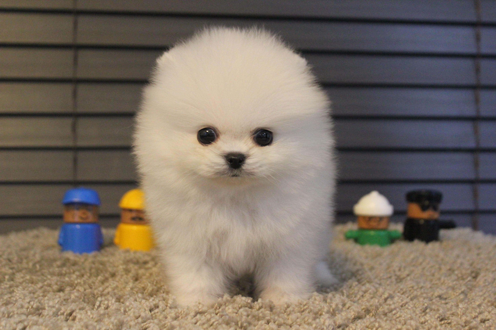

★소형견★
실내에서 기르기 좋은 애완견을 소개해드리겠습니다!
실내에서 키우기 좋은 강아지(소형) TOP 3
●토이푸들(갈색, 블랙, 크림색, 초코, 화이트, 실버)
푸들은 크기에 따라 약간의 다른 기질을 보이는데, 어린아이가 있는 가정에서는 점잖고 아이의 투정도 잘 받아주는 스탠다드 푸들이 좋으며, 모든 가족들과 친밀감을 원할때는 사람을 가장 잘 따르는 미니어처 푸들이 좋다. 그리고 아주 작은 크기를 원할 때는 헛짖음이 좀 있으나, 토이 푸들을 선택하면 좋은 파트너가 될 것이다.
- 특징：
- 곱슬곱슬한 모발 , 털빠짐 적음
- 성격：
- 활발하고 애교가 많다.
●말티즈(화이트)
비교적 주의력과 경계력이 있어 집을 잘 지킬 수 있다. 하지만 만약 서열 정리가 제대로 되지 않은 상황이라면 자기보다 약하다고 생각되는 어린이들을 자신의 라이벌로 생각하는 대드는 경향이 있으므로 훈련이 필요하다.
- 특징：
- 털 빠짐 적음.
- 성격：
- 애교가 많고 활발하고 순함
●포메라니안(화이트, 크림, 오렌지, 파티, 세이블, 황, 블랙, 초코）
포메라니안의 성격은 외향적이고 쾌활하며 영리한 개로 작은 체구에 아주 큰 매력을 지니고 있다. 이 개는 독립적이며, 때때로 열성적으로 자신의 주인을 보호하며 아주 큰 소리로 짖기도 한다. 호기심이 많으며, 장난을 좋아하고 약간 수선을 떨기도 한다. 포메라니안 특징으로 자신의 마음에 들지 않으면 쉽게 토라지는데, 이런 모습은 얄밉지만 하나의 애교로 봐줄 수 있는 행동이라 할 수 있겠다.
- 특징：
- 태어났을때의 색깔이 6개월간 지속됨, 털빠짐 많음
- 성격：
- 순하고 얌전하고 애교가많고 질투가 많음